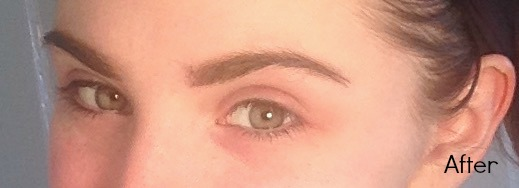

Recently I received a request to write up a post focused on eyebrow maintenance, and I could not be more excited to touch base with all of you. Whether I'm heading out for the night with Mark, prepping for my 9-5 in the city, or just lounging on the weekend (binge watching One Tree Hill, obviously), my brows always look their best - or at least close to it. They've become my obsession. Maybe it's because they are the one facial trait I am complimented on the most (no lie I'd had at least five conversations throughout my three year waitressing career about how I was blessed with brows), or the simple fact that these things get a bit bushy when they aren't tended to. Whatever the reason, my brows are my babies, and I'm going to show you how I keep them well groomed.
What a coincidence that around the time this post was requested, I had been invited to celebrity makeup artist Damone Robert's presentation at the MAC studio in Manhattan to celebrate the launch of their Brows Are It collaboration. Having worked with Beyoncé, Madonna, Alicia Keys, and Nicki Minaj, it's safe to say the man knows his makeup. Opening his first salon in Beverly Hills back in 2002, he's coined his company motto as "every face deserves the perfect frame," and this, my dears, starts at the brow.
Just an FYI for ya: 2016 is all about extremes: heavy on the bright, bold shades, or subdued, almost bare faces. That being said, fuller, more natural brows are having their moment in the beauty sphere. Think Cara Delevigne, Lily Collins, and Solange Knowles-type statement brows that are arched to perfection, without sacrificing any thickness or body.
Believe it or not, the entire shape of your face correlates with your brow structure. When it comes to eyes, the rule of thumb is your eye brow should start at the center of your nostril, so when you're looking to draw in / shape your brows, trace an invisible line from mid-nostril, upward to find your starting point.
A smaller brow gives the illusion of a smaller eye, which can takek away from its gorgeous shape. My eyebrows begin relatively close to my nose, and are extremely full, despite a hideous incident back in the seventh grade when I buzzed off half of my right eyebrow. Luckily for me, it (mostly) grew back, but I digress.
This is my go-to routine for out-and-about brows. You, too, can get bold, fuller brows by following these simple steps:
Step 1: Pluck.
Once my brow hairs get out of hand, I pop over to the salon and get them waxed, but between visits I pluck spare hairs about twice a week
to maintain shape and cleanliness. I don't necessarily have a specific tweezer brand I consider a go-to, quite frankly Shoprite brand gets
the job done right, but everyone loves a Tweezerman tool. My preference lies in the shape of the tweezer's tip. I like them fine
with a precise point, rather than a rounded or slanted, boxy end.
Step 2: Brush
After each unruly hair has been eliminated (and if you miss a few - don't stress. Natural brows don't grow without a few flyaways), I brush out
my brows with the b•lēve b-sleek Brow & Lash Groomer brush. This grooming tool is ideal for the cosmetic perfectionist as it features
a brush and comb to smooth brow hairs back and (bonus!) separate eyelashes!
Step 3: Sculpt
Now that we've gotten all the technical difficulties out of the way, the fun can begin. I love shaping my brows, because it really can define the look
of the day! I've recently become obsessed with Anastasia Beverly Hill's Brow Definer in Taupe, as I think the shade best matches my brows. The process
is very simple. I draw a straight line from the top of the hair closest to my nose, down to the bottom of the brow. From there, I outline the bottom
of my brow and top, shading from the tail to center of my brow with the tip of the pencil for an ombre effect. To blend the pigment, I run the Definer's
spooley brush in a zig-zag motion, as if to re-define the brow.
Step 4: Shading
On an average day, I focus solely on filling in the bald spots of my brows for a completed, sleek look, but if I am in the midst of getting ready
for date-night with the fiancé, or know I'll be meeting with PR reps, I'll shade a bit darker to really draw focus to my eyes. Of course, you don't
have to pair the same brand's tools together, feel free to mix and match, but the Anastasia Beverly Hills Brow Wiz in Chocolate has become my staple.
Step 5: Hold
As if to double check my sculpting precision, and give my brows a little extra color, Milani's Easy Brow Tinted Fiber Gel is an excellent formula
that provides just enough hold without creating stiff follicles. Just one swift swipe and you're good to go!
